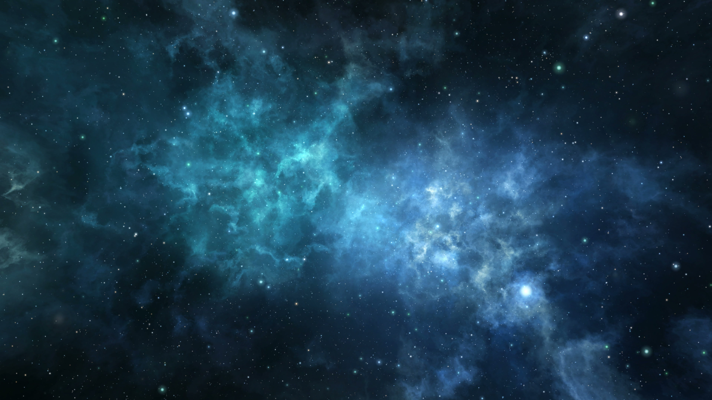

銀河星系（古稱銀河、天河、星河、天漢、銀漢等）[18]，是一個包含太陽系 [19]的棒旋星系。直徑介於100,000[20]至180,000光年[21]。大約擁有1,000億至4,000億顆恆星[22][23]，並可能有1,000億顆行星[24][25]。太陽系距離銀河中心約24,000至28,000光年，在有著濃密氣體和塵埃，被稱為獵戶臂的螺旋臂的內側邊緣。在太陽的位置，公轉週期大約是2億4,000萬年[15]。從地球看，因為是從盤狀結構的內部向外觀看，因此銀河系呈現在天球上環繞一圈的帶狀。
銀河系中最古老的恆星幾乎和宇宙本身一樣古老，因此可能是在大爆炸之後不久的黑暗時期形成的[9]。在核心約10京的範圍內的恆星形成核球，並有著一或多根棒從核球向外輻射。最中心處被標示為強烈的電波源，可能是個超大質量黑洞，被命名為人馬座A*。在很大距離範圍內的恆星和氣體都以每秒大約220公里的速度在軌道上繞著銀河中心運行。這種恆定的速度違反了克卜勒動力學，因而認為銀河系中有大量不會輻射或吸收電磁輻射的質量。這些質量被稱為暗物質[26]。
銀河系有幾個衛星星系，它們都是本星系群的成員，並且是室女超星系團的一部分；而它又是組成拉尼亞凱亞超星系團的一部分[27][28]。
銀河的某些地區可以看作是寬約30度的弧，畫過天空的朦朧光帶[29]。然而，肉眼在天空各處看見的個別恆星，全都是銀河系的一部分[30][31]。來自這條帶狀弧上的光，都是源自銀河平面上，肉眼不能解析的恆星和其它天體累積的光亮。黑暗的區域，像是大裂縫和煤袋星雲，是來自遙遠恆星的光被星際塵埃遮蔽的區域。天空中被銀河遮蔽的區域稱為隱帶。 銀河有著相對較低的面亮度。它的可見度會被背景光，像是光汙染或是來自月球的雜散光，大大的降低。需要每平方秒的亮度比20.2星等更黑暗的天空才能清楚的看見銀河[32]。當肉眼可見的極限星等大約在+5.1等可以看見銀河，或更好的+6.1等，就可以看見許多的細節[33]。這使得在明亮的都市或郊區很難看見銀河，但當月球在地平線下時，在沒有光汙染的鄉村地區看見的銀河就非常明顯[註 1]。新的世界地圖顯示夜晚天空的人造光源亮度，由於光汙染的緣故，地球上超過三分之一的人不能在家園看見銀河[34]。
從地球觀看，銀河系可見的盤面區域涵蓋的面積包括天空中的30個星座[註 2]。銀河中心是銀河最亮的區域，其方向在人馬座。從人馬座，朦朧的白色光帶似乎傳遞到反銀心所在的御夫座。光帶然後繼續其餘的路徑回到人馬座附近，將天球分成兩個大致相等的半球。 銀河盤面相對於黃道（地球繞太陽公轉軌道的平面）傾斜約60度。相對於天球赤道，它向北遠達仙后座，向南則抵達南十字座，顯示地球的赤道平面和黃道相對於銀河盤面都有很大的傾斜。銀河北極位於赤經 12h 49m，赤緯 +27.4°（B1950），靠近周鼎一（后髮座β）；銀河南極在玉夫座α附近。由於這種高傾斜度，在一年中不同的時間，銀河的弧出現在天空中的位置可以很高，也可以在很低。在地球上的北緯65度到南緯65度之間，銀河會一天經過觀測者的天頂兩次。
銀河系包含的恆星數量在2,000億至4,000億顆之間[51][52]，還有至少1,000億顆的行星[53]。確切的數值取決於質量非常低的恆星，這些恆星很難被檢測得到，特別是距離太陽超過300 ly（90 pc）的。作為比較，鄰近的仙女座星系估計擁有1兆（1012）顆恆星[54]。填充在恆星之間空間的，是被稱為星際介質的氣體和塵埃盤面。這個盤面的半徑至少相當程度的對應於恆星盤面的半徑[55]，而氣體層的厚度從冷氣體的數百光年至熱氣體的數千光年[56][57]。
在銀河系的恆星盤面，沒有在之外就沒有恆星的明確邊界。相對的，恆星的密度隨著與銀河中心距離的增加而遞減。大約在距離中心40,000光年（13,000秒差距），每立方秒差距的恆星數量掉落得比半徑的增加還快，而其原因還不了解[58]。環繞在星系盤面周圍的是球狀的星系暈和恆星組成的球狀星團，並進一步的向外延伸，但大小受到兩個銀河的衛星星系，大、小麥哲倫雲的限制，它們的最接近銀河中心的距離大約是180,000 ly（55 kpc）。因此，這些物體可能是從銀河系的附近被逐出的。綜合銀河系的絕對視星等被估計大約是 -20.9等[59][60][註 3]。 經由微引力透鏡和觀測行星凌日，顯示在銀河系內的恆星有許多有多顆行星[24][61]，微引力透鏡的測量更顯示不被綁定的流浪行星比綁定型星的宿主恆星還要多[62][63]。銀河系的每顆恆星至少擁有一顆行星，就會有1,000億至4,000億顆行星；依據克卜勒太空望遠鏡在2013年1月的研究，顯示克卜勒32有5顆行星[25]。分析克卜勒在2013年1月的不同資料，估計在銀河系中至少有170億顆地球大小的系外行星 [64]。在2013年11月4日，天文學家報告，基於克卜勒太空望遠鏡的資料，在銀河系的類太陽恆星和紅矮星的適居帶內，可能有多達400億顆地球大小的行星環繞著[65][66][67]。估計可能有110億顆行星環繞著類似太陽的恆星運行[68]。2016年的研究顯示，最接近的這類行星可能就在距離4.2光年之處[69]。類似地球大小的行星可能比氣態巨行星更多[24]。除了系外行星，也發現了在太陽系之外系外彗星，彗星在銀河系中可能也很常見[70]。
銀河系是由被氣體、塵埃和恆星組成的盤面，環繞著中央的棒狀核心區組成的星系。銀河系的質量分布與哈伯星系分類的Sbc極為相似，顯示這是一個螺旋臂結構相對鬆散的棒旋星系[1]。在1990年代，天文學家開始懷疑銀河系是棒旋星系而不是一個普通的螺旋星系 [74]。他們的懷疑在2005年被史匹哲太空望遠鏡的觀測證實[75]，這表明銀河系中心的棒比之前預想的還大。
太陽距離銀心約25,000－28,000 ly（7.7－8.6 kpc）。這個值是以幾何為基礎的方法，通過測量標準燭光天體，用不同的方法得到這些範圍近似但不同的數值[14][81][82][83][84][85]。在內部的數千秒差距（大約10,000光年的半徑）是非常老的恆星密集區，大致成為球形，被稱為核球[86]。由於先前的星系碰撞和合併，它曾經被認為沒有核球，取而代之的是由核心棒形成的假核球[87]。 銀河系的中心被標示為稱為人馬座A*（顯著的人馬座A星）的強烈電波源。以人馬座A*為中心，圍繞著的天體運動規律顯示該處有個大質量的緻密天體[88]。這種質量集中的最好解釋就是存在著超大質量黑洞[註 4][14][89]（SMBH，supermass black hole），估計它的質量介於410–450萬太陽質量[89]。 超大質量黑洞的吸積率符合估計值量約1×10−5 M☉ y−1的非活躍星系核[90]。觀測顯示多數的正常星系中心附近都有超大質量黑洞[91][92]。